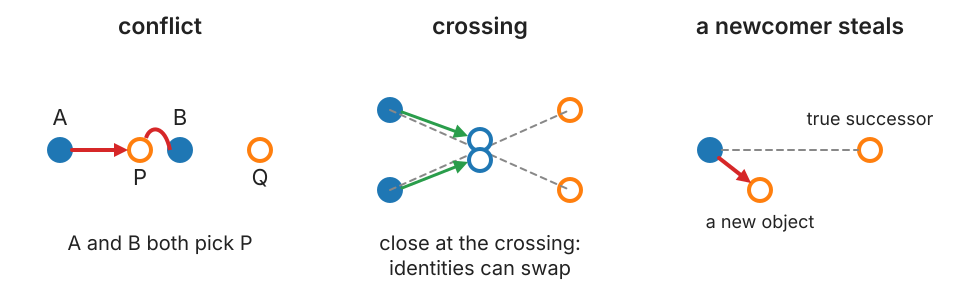
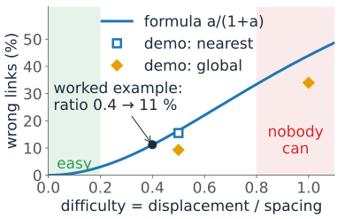
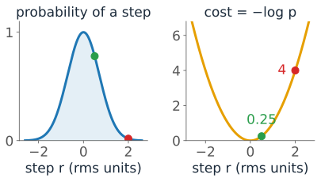
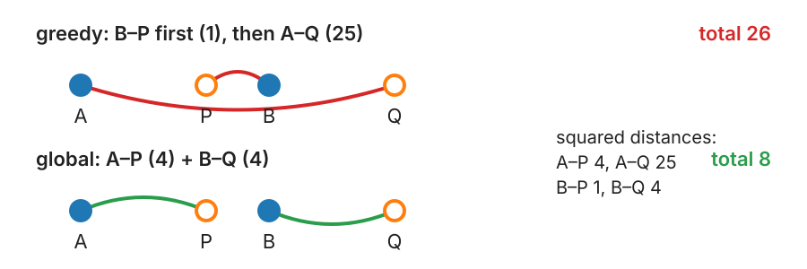
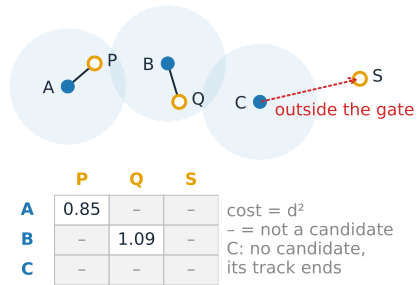
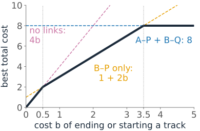
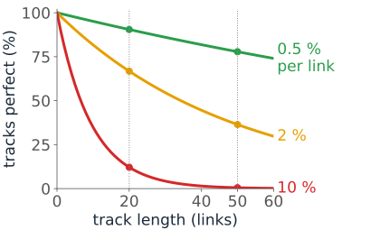

Input: per frame a list of detections, each a position (± a localisation error σ) with a few measurements: area, intensity. They come from labelling (centroids of objects) or from the point detection day (spots with sub-pixel positions).
A track is a chain of detections, at most one per frame, that belong to the same object.
Tracking = deciding, for every detection at t, which detection at t+1 continues it, or none.
Flow or tracking?
Two ways to describe motion in a movie:
Optical flow (the optical flow day, day 25): a velocity for every pixel. No objects, no identities.
Tracking: objects keep an identity over time. You can ask “how far did this cell go?”, “when did it divide?”
They help each other: flow can predict where an object goes next (next unit: prediction), and tracks give velocities only where there are objects.
Recall: correct drift first
If the stage drifts, every object seems to move the same way. On the FFT registration day the drift was measured from the whole image and removed (Drift in a time-lapse).
Correct the drift before linking: then a link only has to explain the object’s own motion.
Without correction the displacement per frame includes the drift: every gate has to be larger, and the problem becomes harder (next slides) for no reason.
Nearest neighbour, and how it fails
Link each detection to the closest detection in the next frame. Works when objects are sparse and slow.

Conflict: two detections choose the same successor.
Crossing: two objects pass close to each other; the identities can swap.
A newcomer steals: the true successor was missed or left; a new object nearby takes the link.
One number says how hard it is
\text{difficulty} = \frac{\text{typical displacement per frame}}{\text{typical spacing between objects}}
Below about 0.2: easy, every method works.
Around 0.5: nearest neighbour makes many errors, global assignment fewer.
Near 1: no linking method is reliable. Image faster (shorter frame interval) or at lower density.

Worked example: random motion with D = 0.1 µm²/s, frame interval \Delta t = 0.1 s: rms displacement \sqrt{4D\Delta t} = 0.2 µm. One object per µm²: mean nearest-neighbour spacing \approx 0.5/\sqrt{n} = 0.5 µm (the measurements day). Ratio 0.4: nearest neighbour gets about 11 % of links wrong.
The math: the nearest-neighbour error rate
Random positions at density n; an object moves a distance r to its true successor. Nearest neighbour is wrong if some other object lies within r of the old position:
P(\text{wrong} \mid r) = 1 - e^{-\pi n r^2} \qquad \text{(no other point in a disc of area } \pi r^2\text{)}.
For a 2D random walk, r^2 is exponential with mean 4D\Delta t, and E\big[e^{-c\,r^2}\big] = 1/(1 + 4cD\Delta t). With c = \pi n:
P_\text{err} = 1 - \frac{1}{1 + a} = \frac{a}{1+a}, \qquad a = 4\pi n D\Delta t = \frac{\pi}{4}\,\rho^2,
where \rho = rms displacement / mean spacing (because \rho^2 = 4D\Delta t \cdot 4n). Example: a = 4\pi \cdot 1 \cdot 0.1 \cdot 0.1 = 0.126, so P_\text{err} = 0.112. For a \ll 1: P_\text{err} \approx a, which grows with the square of the ratio.
Costs: a number per candidate link
Small cost = likely link. The default is the squared distance between the two detections.
Why squared? For random motion, a step of length r has probability \propto e^{-r^2/4D\Delta t}: the squared distance is (up to a constant) the minus log-probability of the step. Adding costs = multiplying probabilities.
For segmented objects, add terms: change in area, in intensity, or 1 − overlap (IoU) for objects that move less than their own size.
Terms in different units must be weighted into one number. The weights are choices, and they matter.

The math: squared distance as a log-likelihood
A 2D random-walk step \Delta\mathbf r over \Delta t has density
For independent objects, the probability of a set of links is the product of the step probabilities. Its minus log is the sum of squared distances (times 1/4D\Delta t) plus a constant per link.
Minimising the sum of squared distances = maximum likelihood set of links.
The cost of ending or starting a track (coming up) is then a log-ratio of probabilities: b = -\log(p_\text{end}) in the same units. In squared-distance units, \sqrt{2b} is “how far is too far”.
Greedy or global?

Greedy: take the cheapest link first (B–P, cost 1), never revisit. A is left with Q (25). Total 26.
Global assignment: minimise the sum of all link costs at once, each detection used at most once: A–P + B–Q = 4 + 4 = 8.
The exact solver is the Hungarian algorithm; image analysis software calls this a “LAP” (linear assignment problem) tracker. It is the same solver as for matching objects to a reference on the evaluation day, now with general costs.
Try it: linking two frames
Gating: some links are not allowed
A gate is a maximum link distance (or speed × elapsed time). Pairs outside it are not candidates at all.
Keeps the problem small: most pairs of detections are impossible, so the cost matrix is mostly empty (fast solvers use that).
Stops absurd links across the image.
Too small: fast objects cannot be linked, their tracks break.
Too large: wrong links can compete with the right ones.

A good gate follows from the motion: a few rms displacements for random motion, the expected step plus a margin for directed motion. The next unit makes the gate come from the predicted uncertainty.
Ending and starting tracks
An object can leave the field, die, or be missed; a new one can enter. So “no link” must be an option, with a price.
Give “end this track” a cost b, and “start a new track” a cost b.
A link is chosen only if it is cheaper than ending one track and starting another: cost < 2b.
With A, B, P, Q: for b ≥ 3.5 both links (total 8); for 0.5 < b < 3.5 only B–P (cost 1 + 2b); for b < 0.5 no links at all.
b is the most important parameter: it acts like a soft gate. Too small: tracks shatter. Too large: wrong links.

The math: linking as a linear assignment problem
With costs c_{ij} (m detections at t, n at t+1), choose x_{ij} \in \{0, 1\} to minimise \sum_{ij} c_{ij}x_{ij}, each row and column used at most once; gated pairs have c_{ij} = \infty. With ends and starts, one square(m+n)\times(n+m) matrix:
M = \begin{pmatrix} C & \operatorname{diag}(d_1, \dots, d_m) \\ \operatorname{diag}(b_1, \dots, b_n) & 0 \end{pmatrix}, \qquad \text{off-diagonals of the diagonal blocks} = \infty.
A perfect assignment of M = a set of links + an end (death dummy) for every unlinked row + a start (birth dummy) for every unlinked column; leftover dummies pair up in the zero block. (Jaqaman et al., 2008, put C^\top in the lower right; the optimum is the same.)
Taking link ij instead of ending i and starting j changes the total by c_{ij} - d_i - b_j: the link wins iff c_{ij} < d_i + b_j.
The constraint matrix is totally unimodular, so the LP relaxation has integer solutions; the Hungarian (Kuhn) or Jonker–Volgenant algorithm solves it in O(N^3), sparse versions much faster.
Try it: a simulated movie
Errors compound
A track of T links is perfect only if every link is right.
error rate per link
20-frame track perfect
50-frame track perfect
10 %
0.9^{20} \approx 12 %
0.9^{50} \approx 0.5 %
2 %
67 %
36 %
0.5 %
90 %
78 %

Long, correct tracks need very low per-link error rates. That is why the frame interval and density matter so much.
Linking can also be done over the whole movie at once (min-cost flow, multiple-hypothesis tracking); frame by frame is the common, fast default.
Summary
A track = a chain of detections; tracking = linking frame to frame. Correct drift first.
Difficulty = displacement per frame / spacing. Nearest neighbour fails at conflicts, crossings and newcomers; its error grows as the square of the ratio.
Cost = squared distance (the minus log-probability of a random step), plus optional terms.
Global assignment minimises the total cost; greedy can be much worse.
Gates forbid long links; the end/start cost b decides when “no link” is better (link iff cost < 2b).